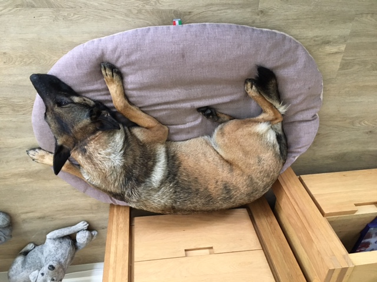

Heidi woont sinds 15 februari 2020 bij ons. We hebben haar via Marktplaats gevonden. Inmiddels wordt ze
bijna 6. Ze is een Mechelse Herder en ontzettend lief. Ze is een opleidingshond geweest en luisterd heel
goed naar de commando's. Heidi is gek op aandacht. Kenmerkend is haar grote pigmentvlek op haar tong.
